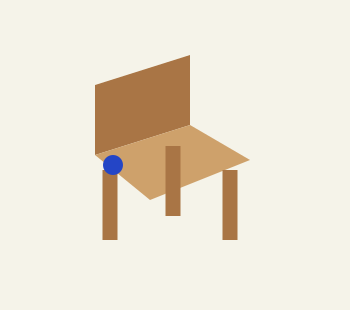
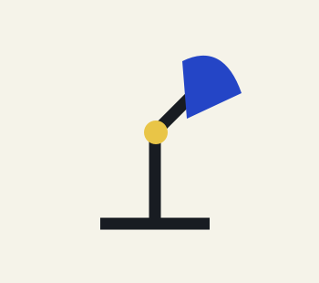
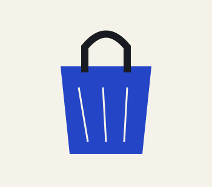
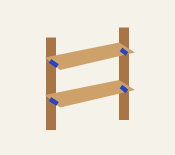
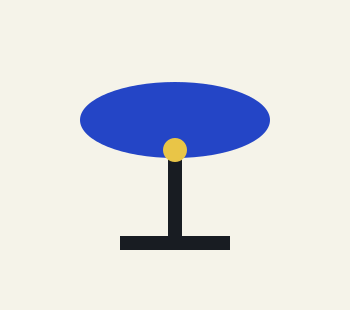
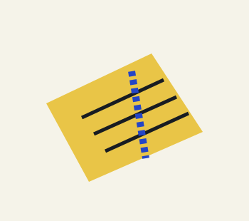

Segmentas
Krėslo scenarijus: viena aiškiai atskiriama jungtis keičia visumos skaitymą.
Viena mėlyna jungtis pažymėta pakeitimo scenarijui.
MEDŽIAGŲ KATALOGAS / MARŠRUTO LAPAS
Pasirink medžiagą ir temą. Sudėk 2–4 objektų eilę, kurią norėtum apžiūrėti šioje išgalvotoje parodoje.
ŠEŠI OBJEKTAI / ŠEŠI SCENARIJAI
Filtruok pagal medžiagą ir dizaino temą. Kiekvienas objektas – originali koncepcija, ne parduodamo produkto faktų rinkinys.
Rodomi 6 scenarijai.

Krėslo scenarijus: viena aiškiai atskiriama jungtis keičia visumos skaitymą.

Lempos eskizas: atskira lanksto vieta leidžia aptarti dalies pakeitimą.

Krepšio scenarijus: pamušalas ir išorė aptariami kaip atskiri sluoksniai.

Lentynos eskizas: plokštumos sujungiamos į kitą išgalvotą kompoziciją.

Staliuko scenarijus: pagrindas ir viršus matomi kaip du atskiri elementai.

Kilimėlio eskizas: matoma siūlė tampa diskusija apie priežiūros scenarijų.
Šiam deriniui objekto nėra. Pasirink kitą medžiagą ar temą.
MEDŽIAGOS / IŠARDYMO ETIKETĖS
Slink šiame skyriuje arba naudok išardymo slankiklį. Tai aiškinamasis dizaino eskizas, ne surinkimo instrukcija.
Tai nėra patvarumo, perdirbamumo ar kitų aplinkosauginių savybių įrodymas.
REMONTO LOGIKA
Mygtukas „Parodyti remontą“ keičia vieną išskirtą krėslo jungtį. Objektas išlaiko savo siluetą, o paaiškinimas įvardija tikrą scenos pokytį.
Šie šeši scenarijai skirti parodos idėjai tyrinėti. Jie neteigia, kad daiktai sertifikuoti, pagaminti ar turi patikrintą poveikį aplinkai.